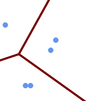

ST_VoronoiLines — ジオメトリの頂点からボロノイ図のセルを返します。
geometry ST_VoronoiLines( g1 geometry , tolerance float8 , extend_to geometry );
ST_VoronoiLinesは、与えられたジオメトリの頂点から、2次元ボロノイ図を計算します。図の細胞間の境界をMULTILINESTRINGで返します。入力ジオメトリがNULLの場合には、NULLを返します。入力ジオメトリに頂点が一つだけしか無い場合には、空ジオメトリコレクションを返します。extend_toのエンベロープの面積が0の場合には、空ジオメトリコレクションを返します。
任意パラメータ:
'tolerance' : この距離以内の点は等価とします。0でない許容距離を指定することで、アルゴリズムのロバスト性が改善します。デフォルトは0.0です。
'extend_to': ジオメトリが"extend_to"パラメータとして渡された場合には、エンベロープがデフォルトエンベロープより小さい場合を除いて、ボロノイ図は"extend_to"ジオメトリのエンベロープを覆う範囲になります (デフォルトはNULLで、デフォルトのエンベロープは入力ジオメトリのバウンディングボックスから各方向に50%ずつ拡張したものです)。
GEOSモジュールで実現しています。
Availability: 2.3.0
 許容範囲を30単位としたボロノイ図
SELECT ST_VoronoiLines(geom, 30) As geom FROM (SELECT 'MULTIPOINT (50 30, 60 30, 100 100,10 150, 110 120)'::geometry As geom ) As g
-- ST_AsText 出力 MULTILINESTRING((135.555555555556 270,36.8181818181818 92.2727272727273),(36.8181818181818 92.2727272727273,-110 43.3333333333333),(230 -45.7142857142858,36.8181818181818 92.2727272727273))
|